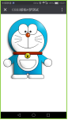
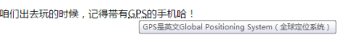

原文连接:https://www.cnblogs.com/rope/p/10658526.html
一、HTML5简介
HTML 5 的第一份正式草案已于2008年1月22日公布。HTML5 仍处于完善之中。然而，大部分现代浏览器已经具备了某些 HTML5 支持。
2014年10月29日，万维网联盟宣布，经过几乎8年的艰辛努力，HTML5标准规范终于最终制定完成了，并已公开发布。
HTML5不仅仅是超文本标记语言的新版本，而是一整套浏览器新API的综合：
新的语义标签。我们知道HTML就是超文本标记语言，负责描述的是文档的语义、结构。HTML5中，提供了非常多的新的标签，<header>、<section>、<footer>、<nav>、<aside>、<article>、<address>等等。丰富了表单元素。
新的本地存储。HTML如果想往客户端存储东西（不是服务器），只能通过cookie。HTML5中提供了一个新的API，叫做本地存储，可以让浏览器轻松的在客户端本地存储数据。
设备兼容特性。HTML5提供了移动设置的所有兼容的API方案，浏览器获得摄像头、陀螺仪、蜂鸣器等等的权利。对于PC浏览器，还加上了全屏API和拖放API。
连接特性。HTTP是无连接的，你的浏览器和服务器之间没有长久链接，HTML5中提出了web socket特性，可以让浏览器和服务器实时链接！比如制作联机对战的俄罗斯方块。
新的音频、视频。曾几何时，Flash一统网页中的音视频，此时HTML5提出了新的video和audio标签。可以让网页轻松的，不通过安装任何插件（比如不用安装Adobe Flash Player）网页播放视频、音频。
新的画布和svg：制作网页的banner、游戏，可以不用Flash了！现在有了Canvas！我们要用canvas制作手机游戏，比如开心爱消除、Flappy Bird。
性能与集成特性：比如XMLHTTPRequest对象出了2代版本，我们可以获得进度的API。HTML现在提供了网页性能的API，能够检测HTTP请求的拥堵、序列等等。
新的样式表：CSS3来了！炫酷爆了！

HTML5不是HTML的新版本，而是包含HTML、CSS、JavaScript、浏览器的一整套API！
所以HTML5简称为H5有道理！不用刻意强调是HTML，因为HTML就是一个超文本标记语言，除了描述语义，什么都没有！但是你看见没有HTML5干到了HTTP！
1.1兼容性如何？
HTML5的兼容程度到底怎么样了呢？
兼容性测试：www.webqianduan.cn/css3test/
|
Chrome |
Firefox |
IE 11 |
IE9 |
IE8 |

HTML5的实现，特别依赖浏览器！所以现在PC端大家都在审慎使用HTML5，但是在移动端，HTML5已经火爆全球！！！整个微信中充斥HTML5小页面！婚礼请柬、炫酷页面。
华为P9、iPhone中的测试：

量化评分网站：http://html5test.comHTML5一共555个新特性，每个小点算一个，不分权重。
特性兼容性查询网站https://caniuse.com/HTML5所有特性（包括CSS3新属性，选择器）都能够进行查询，可以精确的告诉你什么浏览器兼容，什么不兼容。
统计研究院：
二、HTML5骨架和语法改变
2.1HTML5新骨架
<!DOCTYPE html> →DTD极大简化DTD的书写
<html>
<head>
<meta charset="UTF-8" /> →字符集设置
<title>Document</title>
</head>
<body>
</body>
</html>这个DTD是IE67不支持，IE8开始支持。
|
<!DOCTYPE html> |
IE8开始支持，如果为了更大用户兼容，还要写以前的写法
|
<meta charset="UTF-8" /> |
2.2HTML5新的语言规定
1、HTML5中，属性的引号可以省略（除了有很多属性的）
|
<div title=你好 id=box class="box1 box2"></div> |
2、HTML5中标签不分大小写
|
<DiV>标签不分大小写</dIv> |
3、HTML5中，自封闭标签可以省略“/”关闭符号
|
<img src="" alt="" > <input type="" name=""> <br> |
4、HTML5中，type类型可以不写
|
<style></style> <link rel="stylesheet" href=""> <script></script> |
XHTML系列，在HTML5诞生之后就停止维护了，在HTML5中规范都放宽了标准，但是IE678对上面的支持不好。
作为老一代前端工程师，我们要保持风骨，在HTML5中也要以XHTML1.0的规范严格要求自己。
三、HTML5新增语义化标签
3.1新布局标签
传统布局风格：
<div class="header"></div>
<div class="nav"></div>
<div class="main"></div>
<div class="footer"></div>
HTML5推出了新的大纲标签，都是双标签，都有div的性质，块级元素，是容器
以下是HTML5新的布局标签：
<header></header> 头部的语义
<footer></footer> 尾部的意义
<nav></nav> 导航语义
<main></main> 主体内容
<article></article> 文章语义
<section></section> 区域语义，代替div
<aside></aside> 侧边语义
上面这些标签，都是块级元素，没有任何默认样式，容器级标签，可以包裹任何东西，在语义上都比div大，它们能包裹div，但是div不能包裹它们。
新的提纲标签，IE9开始兼容，IE8还是不能用这些标签，移动端中可以嗷嗷用，因为手机没有IE。
<header class="header">
<h1 class="logo"></h1>
<section class="right">
</section>
</header>
<nav>
<ul>
<li>导航</li>
<li>导航</li>
<li>导航</li>
<li>导航</li>
</ul>
</nav>
<section class="content">
<aside>侧边栏</aside>
<main>
<article>
<header><h2>文章标题</h2></header>
<section>
文章内容
</section>
</article>
</main>
</section>
<footer>
底部
</footer>
3.2新的小语义标签
之前XHTML1.0中语义标签只有：p、ul、ol、dl、table等，HTML5极大丰富了语义标签
● 地址Address：
|
<address>广州市天河区棠东东路御富科贸园D座108 点击查看百度地图</address> |
●缩写词语义 abbr：
|
<p>咱们出去玩的时候，记得带有<abbr title="GPS是英文Global Positioning System（全球定位系统）">GPS</abbr>的手机哈！</p> |

●引用语义 cite：
|
<p>程序员一般不会老年痴呆，因为程序员都死得早，没有老年。<cite>中科院社会调查局2017年报告</cite></p> |
程序语义：code：
<code>
for(var i = 0;i < 100;i++){
if(i % 2 == 0){
while(){
console.log()
}
}
}
</code>
● 数据和数据标题，figure和figcaption：
数据就是数据图片、表格。其实普通图片也可以称为数据。
<figure>定义媒介内容的分组，以及它们的标题。
<figcaption>定义 figure 元素的标题。
<figure>
<img src="images/1.jpg" >
<figcaption>这个是我最喜欢的明星，但是有人了</figcaption>
</figure>
●<details> 标签用于描述文档或文档某个部分的细节。
与 <summary> 标签 配合使用可以为 details 定义标题。标题是可见的，用户点击标题时会显示出 details。
open 属性规定 details 是可见的。
<details open="open">
<summary>中南海</summary>
<address>北京市西城区南长街81号</address>
<img src="img/znh.jpg" alt="">
</details>
●对话框语义 dialog
规定 dialog 元素是活动的，用户可与之交互。
<dialog open>
<p>您好</p>
<p>我很好</p>
</dialog>
●保留格式语义 pre：
没有空白折叠现象了
<pre>
for(var i = 0 ; i < 100 ; i ++){
if(i % 2 == 0){
while(true){
}
}
}
</pre>
●定义语义dfn：
|
<p><dfn>什么是浮云</dfn>一般暗指游子，浮云游子意，落日故人情。</p> |
●键盘按键语义 kbd：
定义键盘文本。它表示文本是从键盘上键入的。它经常用在与计算机相关的文档或手册中
|
p>在QQ中，截图的快捷键 是<kbd>Ctrl</kbd>+<kbd>Alt</kbd>+<kbd>A</kbd></p> |
●高亮语义 mark
<mark> 标签定义带有记号的文本，突出显示。
|
<p>明天天气很热，注意<mark>保暖</mark></p> |
●引用语义 q：
|
<p>我们学生必须<q>好好学习，天天向上</q></p> |
浏览器在引用的周围插入了引号。
●注释语义，拼音语义：ruby 、rp、rt：
<ruby>定义 ruby 注释。
<rt>定义 ruby 注释的解释。
<rp>定义若浏览器不支持 ruby 元素显示的内容（可选）
<ruby>
汉<rp>(</rp><rt>hàn</rt><rp>)</rp>
子<rp>(</rp><rt>zǐ</rt><rp>)</rp>
</ruby>
●定义样本文本 samp
<p>
有钱人基本长得丑 <samp>马云</samp>
不过张的丑的不一定是有钱人<samp>我</samp>
</p>
●小号文本 small
|
<p>极品雷事利驱使，淡定继续做<small>猎奴</small></p> |
●时间 time
|
<p>每天<time datetime="2017年4月14日17:22:22">9点整</time>上课</p> |
●变量语义 var
|
<p>二元一次方程：<var>x</var> = <var>y</var>+ 2</p> |
●换行机会 wbr
|
<p>On the second Friday of term Anthony Bevan, whom all his world called "Bruiser Bevan," House<wbr>master of "B. House" in Hamchester College, sat at dessert with three of his prefects.</p> |
●菜单语义 menu：
<menu type="context">
<menuitem>西红柿炒番茄</menuitem>
<menuitem>土豆炒马铃薯</menuitem>
<menuitem>番薯煮地瓜</menuitem>
</menu>
●<meter>标签定义已知范围或分数值内的标量测量。也被称为尺度
带有当前值以及 min、max、high、low 属性的测量范围：
<h1>显示度量：</h1>
<p>张三的分数：<meter min="0" low="40" high="90" max="100" value="95"></meter></p>
<p>李四的成绩：<meter min="0" low="40" high="90" max="100" value="65"></meter></p>
<p>王五的成绩：<meter min="0" low="40" high="90" max="100" value="35"></meter></p>
●<progress>标签标示任务的进度（进程）
请结合 <progress> 标签与 JavaScript 使用，来显示任务的进度。
|
下载进度：<progress value="22" max="100"></progress> |
●模版存放盒子 template
<template>
<p><%p%></p>
<span><%sp%></span>
</template>就是<script type="text/template"></script>浏览器自动给这个标签隐藏：
3.3选项列表分组标签
<select>
<optgroup label="明星">
<option>张学友</option>
<option>刘德华</option>
<option>黎明</option>
<option>郭富城</option>
</optgroup>
<optgroup label="汽车">
<option>奥拓</option>
<option>比亚迪</option>
<option>众泰</option>
</optgroup>
</select>四、HTML5新表单元素
4.1HTML5表单输入类型
|
类型 |
说明 |
|
type="email" |
限制用户输入必须为Email格式 |
|
type="url" |
限制用户输入必须为网址格式 |
|
type="date" |
限制类型为日期 |
|
type="time" |
限制类型为时间 |
|
type="month" |
限制类型为月份 |
|
type="week" |
限制类型为星期 |
|
type="number" |
限制用户输入必须为数字 |
|
type="range" |
滑动条表单，value滑动条的值，min=’0’ max=’100’属性限制范围 |
|
type="color" |
颜色选择表单 value的值必须为完整的16进制 value="#ffffff" |
|
type="datetime-local" |
本地时间 |
|
type="search" |
搜索 |
以上大部分表单元素类型，在手机浏览器显示效果都不一样，在触摸屏键盘显示效果也不一样。
4.2 HTML5表单属性
●autofocus属性
autofocus 属性规定在页面加载时，域自动地获得焦点。
注释：autofocus 属性适用于所有 <input> 标签的类型。
|
<input type="text" autofocus> |
●required属性
required 属性规定必须在提交之前填写输入域（不能为空）。
注释： required属性适用于以下类型<input>标签：text, search, url, telephone, email, password, date pickers, number, checkbox, radio 以及 file。
实例：
|
<input type="text" required> |
●placeholder属性
placeholder 属性提供一种提示，描述输入域所期待的值。
注释：placeholder 属性适用于以下类型的 <input> 标签：text, search, url, telephone, email 以及 password。
提示文本会在输入域为空时显示出现，会在输入域获得焦点时消失：
|
<input type="text" placeholder="请输入内容"> |
●autocomplete 属性
autocomplete 属性规定 form 或 input 域应该拥有自动完成功能。
注释：适用于 <form> 标签，以及以下类型的 <input> 标签：text, search, url, telephone, email, password, datepickers, range 以及 color。
当用户在自动完成域中开始输入时，浏览器应该在该域中显示填写的选项：
<form action="http://www.baidu.com" autocomplete="on">
<p><input type="text" name="user1" ></p>
<p><input type="text" name="user2" ></p>
<p><input type="email" autocomplete="off" ></p>
<input type="submit" >
</form>●multiple 属性
multiple 属性规定输入域中可选择多个值。
注释：multiple 属性适用于以下类型的 <input> 标签：email 和 file。
|
<input type="file" name="img" multiple /> |
●form 属性
form 属性规定输入域所属的一个或多个表单。
注释：form 属性适用于所有 <input> 标签的类型。
form 属性必须引用所属表单的 id：
<form action="" id="user_form">
</form>
<input type="text" name="name" form="user_form" />●pattern属性
pattern 属性规定用于验证 input 域的模式是正则表达式。
注释：pattern 属性适用于以下类型的 <input> 标签：text, search, url, telephone, email 以及 password。
下面的例子是验证11位手机号码：
|
<input type="text" pattern="^[\d]{11}$" /> |
●min、max 和 step 属性
min、max 和 step 属性用于为包含数字或日期的 input 类型规定限定（约束）。
max 属性规定输入域所允许的最大值。
min 属性规定输入域所允许的最小值。
step 属性为输入域规定合法的数字间隔（如果 step="3"，则合法的数是 -3,0,3,6 等）。
注释：min、max 和 step 属性适用于以下类型的 <input> 标签：date pickers、number 以及 range。
下面的例子显示一个数字域，该域接受介于 0 到 10 之间的值，且步进为 3（即合法的值为 0、3、6 和 9）：
|
<input type="number" name="points" min="0" max="10" step="3" /> |
注：属性和属性值一样的情况下，可以省略不写值。
4.3 HTML5表单元素
●datalist 元素
定义和用法：
<datalist> 标签定义选项列表。请与 input 元素配合使用该元素，来定义 input 可能的值。
datalist 及其选项不会被显示出来，它仅仅是合法的输入值列表。
请使用 input 元素的 list 属性来绑定 datalist。
列表是通过 datalist内的option 元素创建的。
如需把 datalist 绑定到输入域，请用输入域的 list 属性引用 datalist 的 id：
<input type="url" list="url_list" />
<datalist id="url_list">
<option label="W3School" value="http://www.W3School.com.cn" />
<option label="Google" value="http://www.google.com" />
<option label="Microsoft" value="http://www.microsoft.com" />
</datalist>输入内容: <input type="text" list="cur" />
<datalist id="cur">
<option value="奥迪汽车">奥迪</option>
<option value="奥利奥饼干">奥利奥</option>
<option value="迪奥汽车">迪奥</option>
<option value="宝马汽车">宝马</option>
<option value="悍马汽车">悍马</option>
<option value="宝宝汽车">宝宝</option>
<option value="众泰汽车">众泰</option>
<option value="大众汽车">大众</option>
</datalist>五、HTML5音频（audio）
5.1音频格式
5.2音频标签
|
<audio></audio> |
基本写法：
|
<audio src="music/yinyue.ogg" autoplay controls loop></audio> |
兼容写法：
<audio controls>
<source src="music/yinyue.mp3">
<source src="music/yinyue.ogg">
<a href="http://www.baidu.com">您的浏览器太旧了，请升级！</a>
</audio>5.3音频标签属性

六、HTML5视频（video）
6.1视频格式
6.2视频标签语法
|
<video></video> |
基本语法：
|
<video src="video/pian.mp4" controls autoplay loop></video> |
兼容语法：
<video controls>
<source src="video/movie.mp4" type="video/mp4">
<source src="video/movie.ogg" type="video/ogg">
<a href="http://www.baidu.com">您的浏览器太旧了，请升级！</a>
</video>6.3视频标签属性
音频和视频标签JS的API大全：
6.4音频/视频标签JavaScript API
6.4.1事件监听
当视频播放或停止时触发的事件
|
v.onpause = function(){} v.onplay = function(){} |
6.4.2方法
|
play() 播放音频/视频 pause() 暂停音频/视频 load() 重新加载音频/视频元素 |
注意：这是原生JS的方法，不能直接用jQuery，但可以间接使用。
|
$()[0].play() 通过[0]把选中的元素转换成原生对象就可以使用这些方法了。 |
6.4.3音频视频JS API属性
|
paused 设置或返回音频/视频是否暂停 muted 设置或返回音频/视频是否静音 currentTime 设置或返回音频/视频中的当前播放位置（以秒计），制作加速减速播放 playbackRate 设置或返回音频/视频播放的速度 duration 返回当前音频/视频的长度（以秒计） volume 设置或返回音频/视频的音量 1.0最高音量（默认）0.5一半音量（50%） 0.0静音 |
七、HTML5本地存储
7.1 本地存储简介
在客户端存储数据
HTML5 提供了两种在客户端存储数据的新方法：
- localStorage - 没有时间限制的数据存储
- sessionStorage - 针对一个 session 的数据存储
之前，这些都是由 cookie 完成的。但是 cookie 不适合大量数据的存储，因为它们由每个对服务器的请求来传递，这使得 cookie 速度很慢而且效率也不高。
HTML5 使用 JavaScript 来存储和访问数据。
7.2 localStorage语法
localStorage 方法存储的数据没有时间限制。第二天、第二周或下一年之后，数据依然可用。localStorage 和sessionStorage分别是本地存储和会话存储，统称本地存储。
|
存储数据：localStorage.setItem(‘key’,’value’); 读取数据：localStorage.getItem(‘key’) 存储数据：sessionStorage.setItem('testKey','这是一个测试的value值'); // 存入一个值
读取数据：sessionStorage.getItem('testKey'); //返回testKey对应的值
|
|
删除指定数据：localStorage.removeItem(‘key’); 清空所有数据：localStorage.clear() |
本地存储数据库会自动的为每一个网站（IP地址）建立一个独立的表格，在同一个网站（IP地址）下数据是可以共享的，但是不能跨域。不能跨浏览器存储，每个浏览器都有自己的小数据库，Chrome存储的，火狐看不见。
localStorage是简单的数据库，没有查询功能，不能用sql操作，只能简单的存储、读取k-v对。
sessionStorage 浏览器窗口一旦关闭，数据就丢失了
localStorage存储的数据，永远不丢失，关机，重启都不会导致数据丢失，除非清除了浏览器记录
7.3使用JSON持久数据
很明显，如果只能存储字符串，这个数据威力不大，所以存储字符串意义不大，我们要存储JSON对象。
数据库只能存储字符串，所以存储JOSN的时候会显示object
|
localStorage.setItem('iqianduan.cn_json',{"a":100,"b":200}) |
此时就要进行一个转换：
|
把JSON变为字符串 → 存储 → 读取 → 把字符串转为JSON对象 |
|
JSON.parse() 把字符串转为对象 JSON.stringify() 把对象转为字符串 |
btn[0].onclick = function(){
//要存储的数据
var data = {"a":100,"b":200,"c":300,"d":[1,2,3,4]}
//存储之前，把数据转为字符串
var dataStr = JSON.stringify(data);
//存储数据
localStorage.setItem('iqianduan.cn',dataStr);
//读取
var str = localStorage.getItem('iqianduan.cn');
//转为JSON对象
var dataObj = JSON.parse(str);
console.log(dataObj.a)
}当我们上面的策略都会了，此时JSON可以非常复杂，本地存储是没有字节限制的，此时JSON用字符串保存不会变形。
多次保存同一个key会覆盖，所有要追加内容到本地数据库的时候，一定要先：读取→修改→再存储：
btn[0].onclick = function(){
//要存储的数据
var data = {"a":100,"b":200,"c":300,"d":[1,2,3,4]}
//存储之前，把数据转为字符串
var dataStr = JSON.stringify(data);
//存储数据
localStorage.setItem('iqianduan.cn',dataStr);
//读取
var str = localStorage.getItem('iqianduan.cn');
//转为JSON对象
var dataObj = JSON.parse(str);
//改变数据
dataObj.c = 999;
dataObj.e = 888;
console.log(dataObj)
//修改，再存储新的值
var dataStr = JSON.stringify(dataObj);
localStorage.setItem('iqianduan.cn',dataStr);
}
八、自定义属性和classList
8.1 classList
参考手册：http://www.runoob.com/jsref/prop-element-classlist.html
classList 属性返回元素的类名，作为 DOMTokenList 对象。
该属性用于在元素中添加，移除及切换 CSS 类。
classList 属性是只读的，但你可以使用 add() 和 remove() 方法修改它。
|
方法 |
描述 |
|
add(class1, class2, ...) |
在元素中添加一个或多个类名。 如果指定的类名已存在，则不会添加 |
|
remove(class1, class2, ...) |
移除元素中一个或多个类名。 注意： 移除不存在的类名，不会报错 |
|
toggle(class, true|false) |
在元素中切换类名。 第一个参数为要在元素中移除的类名，并返回 false。 如果该类名不存在则会在元素中添加类名，并返回 true。 第二个是可选参数，是个布尔值用于设置元素是否强制添加或移除类，不管该类名是否存在。 注意： Internet Explorer 或 Opera 12 及其更早版本不支持第二个参数。 |
|
contains(class) |
返回布尔值，判断指定的类名是否存在。 可能值： true - 元素包已经包含了该类名 false - 元素中不存在该类名 |
<button>按钮</button>
<p class="border">这是一段文字</p>
<script type="text/javascript">
var btn = document.querySelector("button");
var p = document.querySelector("p");
btn.onclick = function(){
//p.className = "border red";//我们之前的处理方法 为了不丢失之前的类名 我们在增加类名的时候把之前的所有类名重写一遍
console.log(p.classList);//该标签的所有类名集合
//元素.classList.对应的方法()
p.classList.add("red");//增加类(他不会覆盖之前的类名)
p.classList.remove("border");//删除类(他不会覆盖之前的类)
p.classList.toggle("fs");//切换类
console.log(p.classList.contains("red"));//判断是否有该类
}
</script>
8.2 自定义属性
新的HTML5标准允许你在普通的元素标签里，嵌入类似data-*的属性，来实现一些简单数据的存取。它的数量不受限制，并且也能由javascript动态修改，也支持CSS选择器进行样式设置。这使得data属性特别灵活，也非常强大。有了这样的属性我们能够更加有序直观的进行数据预设或存储。
<!--
在html5之后我们建议自定义属性前面加data
<p data-自定义属性名称="属性值"></p>
-->
<p data-zdy="这是我自定义的属性">这是一个段落标签</p>
<script type="text/javascript">
var p = document.querySelector("p");
console.log(p.dataset.zdy);//获取自定义属性
p.dataset.other = "我设置的另一个自定义属性";//设置自定义属性
</script>